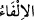
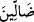
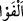
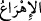

azabı hak etmelerinin gerekçesidir. “ vicdan (bulmak) mânâsındadır. “
kelimesi “ fiilinin ikinci mefulüdür. Mânâ şöyledir: Bunlar gerçekte babalarını hak
ve hidâyetten sapmış buldular; huccet ve delil bulmak şöyle dursun, hak ve hidâyet
nâmına şüphe değerinde bile bir kaynak ve dayanakları yoktur.
“onlar” yani zulmeden kâfirler babalarının “peşlerinden” azıcık bir düşünmeyle de
olsa kendilerinin bâtıl üzere oldukları âşikâr olmakla beraber, babalarının hak üzere
olup olmadıklarını hiç düşünmeksizin “koşup gittiler.”
“ kelimesi çok hızlı yürümek, koşmak demektir. Sanki onlar babalarının
ardından gitmeye teşvik ve icbar ediliyormuş gibi koşuyorlar.
[210]. Terğîb, V, 441.